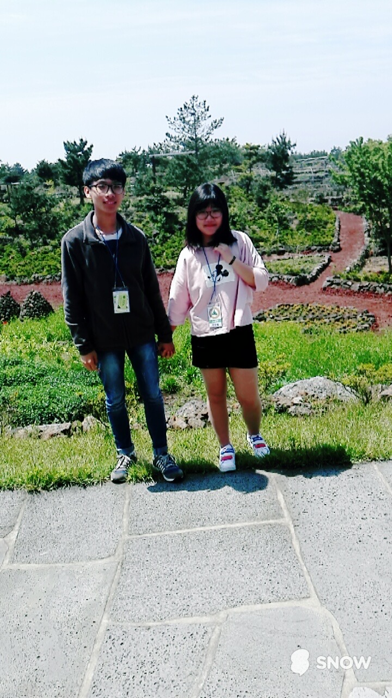
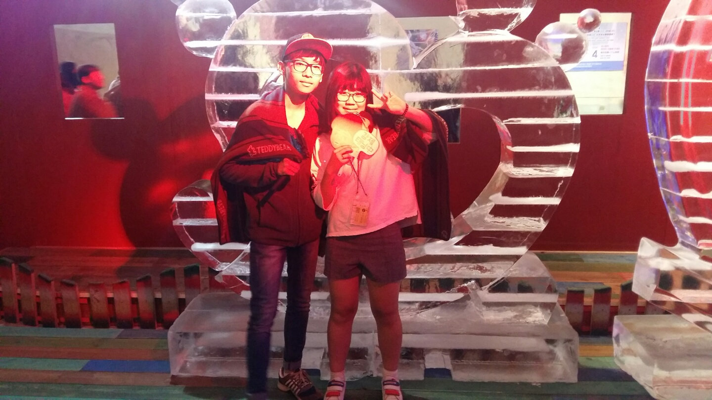

10대
2015
2016
2017
2018
2019
20대
2020
2021
2022
2016년 우리의 기억
2016.04.21 : 사귄날
나이 : 16세(중학교 3학년)
고백한 사람 : 이우림


(중3 제주 수학여행)
위 정보처럼 짝사랑은 이재진이 했지만, 고백은 이우림이 했습니다. 둘은 2016년 4월 21일 부로 1일이 되었고 이 둘의 이야기는 이제부터 진짜 시작입니다.